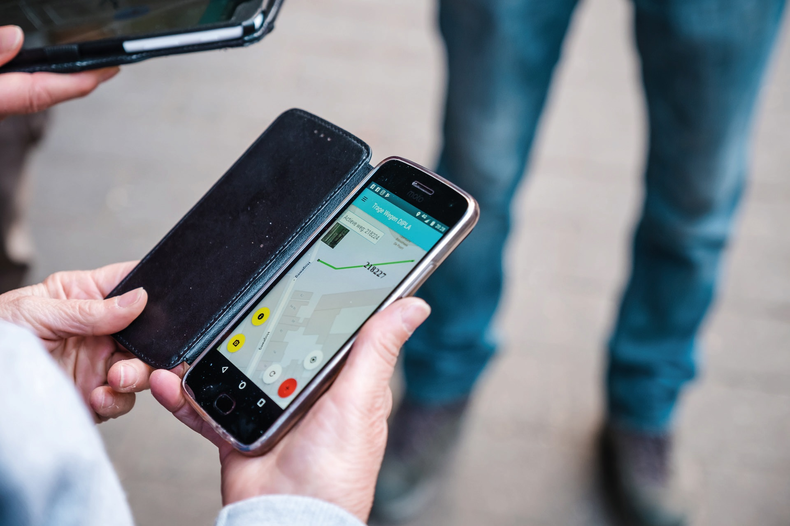

INVENTARIS
Na een grondige kaartanalyse o.b.v. verschillende beschikbare bronnen en dankzij de hulp van vele inventariseerders is stapsgewijs de toestand van de trage wegen op het grondgebied van Landen ondertussen in kaart gebracht. Een indrukwekkend huzarenstukje en al even impressionante cijfers!
In het najaar van 2021 zal de stad samen met Trage Wegen de grote lijnen uitzetten van het vervolgtraject. In de eerste plaats wordt een stadsbrede visie voor het gewenst traag netwerk uitgetekend: een conceptueel streefbeeld waarin alle accenten van de verschillende betrokken stadsdiensten hun plek krijgen.
Vanaf 2022 nodigen we inwoners en lokale organisaties uit om mee na te denken over de trage wegen in hun buurt. Zo wordt o.a. duidelijk welke verbindingen belangrijk zijn, welke wegen toe zijn aan een herwaardering of herinrichting en welke de ontbrekende schakels zijn.
Wil je hier graag aan meewerken? Dan kan je dit alvast laten weten via de contactgegevens van de stad hieronder.

Zowie Vangeel
zowie.vangeel
@tragewegen.be
tel: 0471 95 21 11
www.tragewegen.be